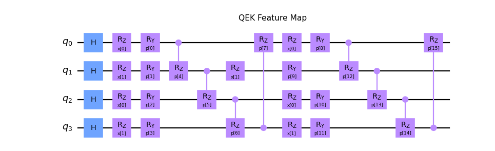
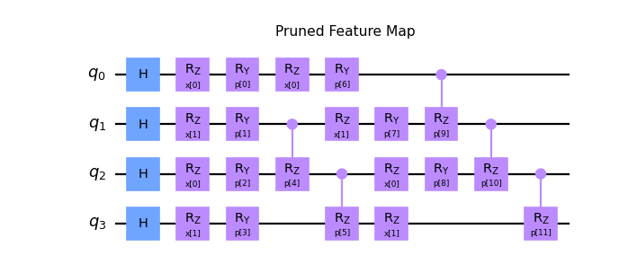

squlearn.feature_map.PrunedFeatureMap
- class squlearn.feature_map.PrunedFeatureMap(feature_map: FeatureMapBase, pruned_parameters: list)
Class for pruning redundant parameter of feature maps.
This class is designed to accept a feature map and selectively prune parameters based on a provided list of indices. The pruned feature map can be used as a usual feature map.
Example: Pruned QEK Feature Map
from squlearn.feature_map import QEKFeatureMap,PrunedFeatureMap fm = QEKFeatureMap(4,2,2) fm.draw() PrunedFeatureMap(fm,[4,7,11,15]).draw()
  - Parameters:
feature_map (FeatureMapBase) – FeatureMap from which the parameters are removed
pruned_parameters (list) – list with indices of the redundant parameters
- draw(output: Optional[str] = None, feature_label: str = 'x', parameter_label: str = 'p', decompose: bool = False, **kwargs) None
Draws the feature map circuit using the QuantumCircuit.draw() function.
- Parameters:
feature_label (str) – Label for the feature vector (default:”x”).
parameter_label (str) – Label for the parameter vector (default:”p”).
decompose (bool) – If True, the circuit is decomposed before printing (default: False).
kwargs – Additional arguments from Qiskit’s QuantumCircuit.draw() function.
- Returns:
Returns the circuit in qiskit QuantumCircuit.draw() format
- generate_initial_parameters(seed: Union[None, int] = None) ndarray
Generates random parameters for the pruned feature map.
- Parameters:
seed (Union[int,None]) – Seed for the random number generator (default: None)
- Returns:
The randomly generated parameters
- get_circuit(features: Union[ParameterVector, ndarray], parameters: Union[ParameterVector, ndarray]) QuantumCircuit
Generates and returns the circuit of the pruned feature map.
- Parameters:
features (Union[ParameterVector,np.ndarray]) – Input vector of the features from which the gate inputs are obtained
param_vec (Union[ParameterVector,np.ndarray]) – Input vector of the parameters from which the gate inputs are obtained
- Returns:
The circuit in Qiskit’s QuantumCircuit format of the pruned feature map.
- get_params(deep: bool = True) dict
Returns hyper-parameters and their values of the feature map.
- Parameters:
deep (bool) – If True, also the parameters for contained objects are returned (default=True).
- Returns:
Dictionary with hyper-parameters and values.
- set_params(**params) None
Sets value of the feature map hyper-parameters.
- Parameters:
params – Hyper-parameters and their values, e.g.
num_qubits=2.
{kind=link}
{kind=link}
{kind=link}
{kind=link}